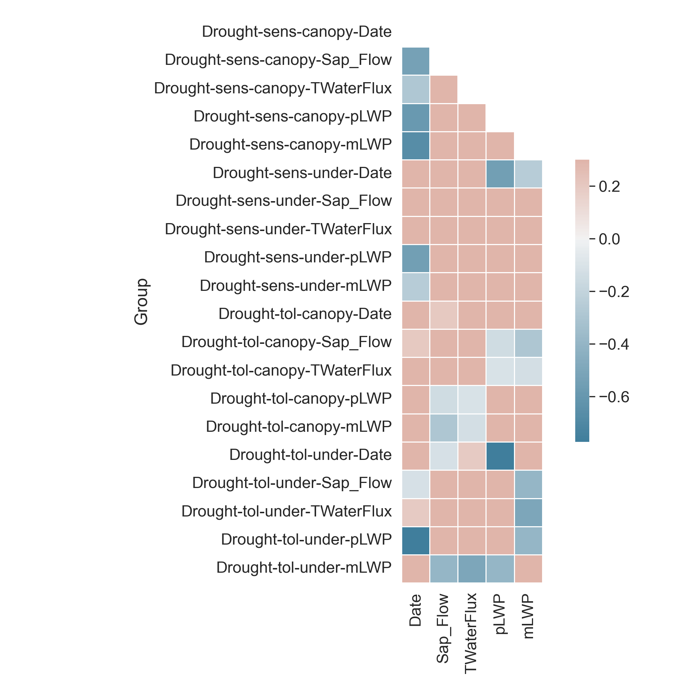

# Import all required libraries
# Data analysis and manipulation
import pandas as pd
# Working with arrays
import numpy as np
# Statistical visualization
import seaborn as sns
# Matlab plotting for Python
import matplotlib.pyplot as plt
import matplotlib.patches as mpatches
# Data analysis
import statistics as stat
import scipy.stats as stats
# Two-sample Chi-Square test
from scipy.stats import chi2_contingency
# Predictive data analysis: process data
from sklearn import preprocessing as pproc
# Predictive data analysis: linear models
from sklearn.model_selection import cross_val_predict
# Predictive data analysis: linear models
from sklearn.linear_model import LinearRegression
# Visualizing missing values
import missingno as msno
# Statistical modeling
import statsmodels.api as sm
# Statistical modeling: ANOVA
from statsmodels.formula.api import ols
# Mosaic plot
from statsmodels.graphics.mosaicplot import mosaic
from itertools import product
# Increase font and figure size of all seaborn plot elements
sns.set(font_scale = 1.5, rc = {'figure.figsize':(8, 8)})
# Change theme to "white"
sns.set_style("white")Correlating Like a Data Master
Purpose of this chapter
Assess relationships within a novel data set
Take-aways
- Describe and visualize correlations between numerical variables
- Visualize correlations of all numerical variables within groups
- Describe and visualize relationships based on target variables
Required setup
We first need to prepare our environment with the necessary libraries and set a global theme for publishable plots in seaborn.
Load the Examine a Data Set
We will be using open source data from UArizona researchers that investigates the effects of climate change on canopy trees. (Meredith, Ladd, and Werner 2021)
# Read csv
data = pd.read_csv("data/Data_Fig2_Repo.csv")
# Convert 'Date' column to datetime
data['Date'] = pd.to_datetime(data['Date'])
# What does the data look like
data.head() Date Group Sap_Flow TWaterFlux pLWP mLWP
0 2019-10-04 Drought-sens-canopy 184.040975 82.243292 -0.263378 -0.679769
1 2019-10-04 Drought-sens-under 2.475989 1.258050 -0.299669 -0.761326
2 2019-10-04 Drought-tol-canopy 10.598949 4.405479 -0.437556 -0.722557
3 2019-10-04 Drought-tol-under 4.399854 2.055276 -0.205224 -0.702858
4 2019-10-05 Drought-sens-canopy 182.905444 95.865255 -0.276928 -0.708261Describe and Visualize Correlations
Correlations are a statistical relationship between two numerical variables, may or may not be causal. Exploring correlations in your data allows you determine data independence, a major assumption of parametric statistics, which means your variables are both randomly collected.
If you’re interested in some underlying statistics…
Note that the we will use the Pearson’s \(r\) coefficient in corr() function from the pandas library, but you can specify any method you would like: corr(method = ""), where the method can be "pearson" for Pearson’s \(r\), "spearman" for Spearman’s \(\rho\), or "kendall" for Kendall’s \(\tau\). The main differences are that Pearson’s \(r\) assumes a normal distribution for ALL numerical variables, whereas Spearman’s \(\rho\) and Kendall’s \(\tau\) do not, but Spearman’s \(\rho\) requires \(N > 10\), and Kendall’s \(\tau\) does not. Notably, Kendall’s \(\tau\) performs as well as Spearman’s \(\rho\) when \(N > 10\), so its best to just use Kendall’s \(\tau\) when data are not normally distributed.
# subset dataframe to include only numeric columns
numData = data.select_dtypes(include='number')
# Table of correlations between numerical variables (we are sticking to the default Pearson's r coefficient)
numData.corr() Sap_Flow TWaterFlux pLWP mLWP
Sap_Flow 1.000000 0.988137 0.120281 -0.201195
TWaterFlux 0.988137 1.000000 0.125645 -0.189330
pLWP 0.120281 0.125645 1.000000 0.677651
mLWP -0.201195 -0.189330 0.677651 1.000000# Heatmap correlation matrix of numerical variables
# Correlation matrix
corr = numData.corr()
# Generate a mask for the upper triangle
mask = np.triu(np.ones_like(corr, dtype = bool))
# Generate a custom diverging colormap
cmap = sns.diverging_palette(230, 20, as_cmap = True)
# Heatmap of the correlation matrix
sns.heatmap(corr, cmap = cmap, mask = mask, vmax = 0.3, center = 0,
square = True, linewidths = 0.5, cbar_kws = {"shrink": .5})
# Tight margins for plot
plt.tight_layout()
# Show plot
plt.show()Visualize Correlations within Groups
If we have groups that we will compare later on, it is a good idea to see how each numerical variable correlates within these groups.
# Increase font and figure size of all seaborn plot elements
sns.set(font_scale = 1.5, rc = {'figure.figsize':(10, 10)})
# Change theme to "white"
sns.set_style("white")
# Heatmap correlation matrix of numerical variables
# Correlation matrix
corr = data.groupby('Group').corr()
# Generate a mask for the upper triangle
mask = np.triu(np.ones_like(corr, dtype = bool))
# Generate a custom diverging colormap
cmap = sns.diverging_palette(230, 20, as_cmap = True)
# Heatmap of the correlation matrix
ax = sns.heatmap(corr, cmap = cmap, mask = mask, vmax = 0.3, center = 0,
square = True, linewidths = 0.5, cbar_kws = {"shrink": .5})
# Change y-axis label
ax.set(ylabel = 'Group')
# Tight margins for plot
plt.tight_layout()
# Show plot
plt.show()
This is great, we have our correlations within groups! However, the correlation matrices aren’t always the most intuitive, so let’s plot!
Specifically, we are looking at the correlations between predawn leaf water potential pLWP and midday leaf water potential mLWP. Leaf water potential is a key indicator for how stressed plants are in droughts.
dataplot = data[["Group", "pLWP", "mLWP"]]
# Increase font and figure size of all seaborn plot elements
sns.set(font_scale = 2.5, rc = {'figure.figsize':(10, 10)})
# Change seaborn plot theme to white
sns.set_style("white")
# Empty subplot grid for pairwise relationships
g = sns.PairGrid(dataplot, hue = "Group", height = 5)
# Add scatterplots to the upper portion of the grid
g1 = g.map_upper(sns.scatterplot, alpha = 0.5, s = 100)
# Add a kernal density plot to the diagonal of the grid
g2 = g1.map_diag(sns.kdeplot, fill = True, linewidth = 3)
# Add a kernal density plot to the lower portion of the grid
g3 = g2.map_lower(sns.kdeplot, levels = 5, alpha = 0.75)
# Remove legend title
g4 = g3.add_legend(title = "", adjust_subtitles = True)
# Show plot
plt.show()Describe and Visualize Relationships Based on Target Variables
Target Variables
Target variables are essentially numerical or categorical variables that you want to relate others to in a data frame.
The relationships below will have the formula relationship target ~ predictor.
Numerical Target Variables: Numerical Variable of Interest
Formula: pLWP (numerical) ~ mLWP (numerical)
# The numerical predictor variable
X = data[["mLWP"]]
# The numerical target variable
Y = data[["pLWP"]]
# Define the linear model, drop NAs
model = sm.OLS(Y, X, missing = 'drop')
# Fit the model
model_result = model.fit()
# Summary of the linear model
model_result.summary()| Dep. Variable: | pLWP | R-squared (uncentered): | 0.934 |
| Model: | OLS | Adj. R-squared (uncentered): | 0.934 |
| Method: | Least Squares | F-statistic: | 3882. |
| Date: | Fri, 15 Sep 2023 | Prob (F-statistic): | 3.29e-164 |
| Time: | 00:32:12 | Log-Likelihood: | 102.11 |
| No. Observations: | 276 | AIC: | -202.2 |
| Df Residuals: | 275 | BIC: | -198.6 |
| Df Model: | 1 | ||
| Covariance Type: | nonrobust |
| coef | std err | t | P>|t| | [0.025 | 0.975] | |
| mLWP | 0.5995 | 0.010 | 62.309 | 0.000 | 0.581 | 0.618 |
| Omnibus: | 6.825 | Durbin-Watson: | 1.348 |
| Prob(Omnibus): | 0.033 | Jarque-Bera (JB): | 8.247 |
| Skew: | -0.219 | Prob(JB): | 0.0162 |
| Kurtosis: | 3.725 | Cond. No. | 1.00 |
Notes:
[1] R² is computed without centering (uncentered) since the model does not contain a constant.
[2] Standard Errors assume that the covariance matrix of the errors is correctly specified.
# Plotting the linear relationship
# Increase font and figure size of all seaborn plot elements
sns.set(font_scale = 1.25, rc = {'figure.figsize':(8, 8)})
# Change seaborn plot theme to white
sns.set_style("white")
# Subplots
fig, (ax1, ax2) = plt.subplots(ncols = 2, nrows = 1)
# Regression plot between mLWP and pLWP
sns.regplot(data = data, x = "mLWP", y = "pLWP", ax = ax1)
# Set regression plot title
ax1.set_title("Linear regression")
# Regression plot between mLWP and pLWP
sns.residplot(data = data, x = "mLWP",
y = "pLWP", ax = ax2)
# Set residual plot title
ax2.set_title("Residuals")
# Tight margins
plt.tight_layout()
# Show plot
plt.show()Numerical Target Variables: Categorical Variable of Interest
Formula: pLWP (numerical) ~ Group (categorical)
model = ols('pLWP ~ C(Group)', data = data).fit()
sm.stats.anova_lm(model, typ = 2) sum_sq df F PR(>F)
C(Group) 2.775293 3.0 22.045408 8.267447e-13
Residual 11.414011 272.0 NaN NaN# Increase font and figure size of all seaborn plot elements
sns.set(font_scale = 1.25, rc = {'figure.figsize':(4, 4)})
# Change seaborn plot theme to white
sns.set_style("white")
# Box plot
Group_Box = sns.boxplot(data = data, x = "pLWP", y = "Group", width = 0.3)
# Tweak the visual presentation
Group_Box.set(ylabel = "Group")
# Tight margins
plt.tight_layout()
# Show plot
plt.show()
Categorical Target Variables: Numerical Variable of Interest
Formula: Group (categorical) ~ pLWP (numerical)
# Grouped describe by one column, stacked
Groups = data.groupby('Group').describe().unstack(1)
# Print all rows
print(Groups.to_string()) Group
Date count Drought-sens-canopy 147
Drought-sens-under 147
Drought-tol-canopy 147
Drought-tol-under 147
mean Drought-sens-canopy 2019-12-16 00:00:00
Drought-sens-under 2019-12-16 00:00:00
Drought-tol-canopy 2019-12-16 00:00:00
Drought-tol-under 2019-12-16 00:00:00
min Drought-sens-canopy 2019-10-04 00:00:00
Drought-sens-under 2019-10-04 00:00:00
Drought-tol-canopy 2019-10-04 00:00:00
Drought-tol-under 2019-10-04 00:00:00
25% Drought-sens-canopy 2019-11-09 12:00:00
Drought-sens-under 2019-11-09 12:00:00
Drought-tol-canopy 2019-11-09 12:00:00
Drought-tol-under 2019-11-09 12:00:00
50% Drought-sens-canopy 2019-12-16 00:00:00
Drought-sens-under 2019-12-16 00:00:00
Drought-tol-canopy 2019-12-16 00:00:00
Drought-tol-under 2019-12-16 00:00:00
75% Drought-sens-canopy 2020-01-21 12:00:00
Drought-sens-under 2020-01-21 12:00:00
Drought-tol-canopy 2020-01-21 12:00:00
Drought-tol-under 2020-01-21 12:00:00
max Drought-sens-canopy 2020-02-27 00:00:00
Drought-sens-under 2020-02-27 00:00:00
Drought-tol-canopy 2020-02-27 00:00:00
Drought-tol-under 2020-02-27 00:00:00
std Drought-sens-canopy NaN
Drought-sens-under NaN
Drought-tol-canopy NaN
Drought-tol-under NaN
Sap_Flow count Drought-sens-canopy 120.0
Drought-sens-under 120.0
Drought-tol-canopy 120.0
Drought-tol-under 120.0
mean Drought-sens-canopy 85.269653
Drought-sens-under 1.448825
Drought-tol-canopy 9.074309
Drought-tol-under 4.573516
min Drought-sens-canopy 33.37045
Drought-sens-under 0.17263
Drought-tol-canopy 5.90461
Drought-tol-under 2.17178
25% Drought-sens-canopy 53.975162
Drought-sens-under 0.534165
Drought-tol-canopy 8.11941
Drought-tol-under 4.053346
50% Drought-sens-canopy 76.717782
Drought-sens-under 1.665492
Drought-tol-canopy 9.286552
Drought-tol-under 4.944842
75% Drought-sens-canopy 94.068107
Drought-sens-under 2.194299
Drought-tol-canopy 10.404117
Drought-tol-under 5.139685
max Drought-sens-canopy 184.040975
Drought-sens-under 2.475989
Drought-tol-canopy 10.705455
Drought-tol-under 5.726712
std Drought-sens-canopy 41.313962
Drought-sens-under 0.803858
Drought-tol-canopy 1.39567
Drought-tol-under 0.90243
TWaterFlux count Drought-sens-canopy 147.0
Drought-sens-under 147.0
Drought-tol-canopy 147.0
Drought-tol-under 147.0
mean Drought-sens-canopy 40.404061
Drought-sens-under 0.75177
Drought-tol-canopy 4.357234
Drought-tol-under 2.189824
min Drought-sens-canopy 12.377738
Drought-sens-under 0.101381
Drought-tol-canopy 2.036843
Drought-tol-under 0.953906
25% Drought-sens-canopy 25.220908
Drought-sens-under 0.27419
Drought-tol-canopy 3.601341
Drought-tol-under 1.735003
50% Drought-sens-canopy 38.630891
Drought-sens-under 0.824875
Drought-tol-canopy 4.460778
Drought-tol-under 2.198131
75% Drought-sens-canopy 50.096197
Drought-sens-under 1.11289
Drought-tol-canopy 5.112844
Drought-tol-under 2.686605
max Drought-sens-canopy 96.012719
Drought-sens-under 1.801823
Drought-tol-canopy 5.97689
Drought-tol-under 3.654336
std Drought-sens-canopy 19.027997
Drought-sens-under 0.429073
Drought-tol-canopy 0.940353
Drought-tol-under 0.597511
pLWP count Drought-sens-canopy 69.0
Drought-sens-under 69.0
Drought-tol-canopy 69.0
Drought-tol-under 69.0
mean Drought-sens-canopy -0.669932
Drought-sens-under -0.696138
Drought-tol-canopy -0.629909
Drought-tol-under -0.440243
min Drought-sens-canopy -1.299263
Drought-sens-under -1.433333
Drought-tol-canopy -0.863656
Drought-tol-under -0.746667
25% Drought-sens-canopy -0.790573
Drought-sens-under -0.8
Drought-tol-canopy -0.706479
Drought-tol-under -0.520487
50% Drought-sens-canopy -0.705942
Drought-sens-under -0.592118
Drought-tol-canopy -0.602841
Drought-tol-under -0.406439
75% Drought-sens-canopy -0.47329
Drought-sens-under -0.521217
Drought-tol-canopy -0.571356
Drought-tol-under -0.360789
max Drought-sens-canopy -0.263378
Drought-sens-under -0.299669
Drought-tol-canopy -0.437556
Drought-tol-under -0.205224
std Drought-sens-canopy 0.24639
Drought-sens-under 0.283935
Drought-tol-canopy 0.095571
Drought-tol-under 0.131879
mLWP count Drought-sens-canopy 77.0
Drought-sens-under 77.0
Drought-tol-canopy 77.0
Drought-tol-under 77.0
mean Drought-sens-canopy -1.319148
Drought-sens-under -1.097537
Drought-tol-canopy -0.892554
Drought-tol-under -0.809572
min Drought-sens-canopy -1.812151
Drought-sens-under -1.808333
Drought-tol-canopy -1.073619
Drought-tol-under -1.168716
25% Drought-sens-canopy -1.525563
Drought-sens-under -1.335521
Drought-tol-canopy -0.945841
Drought-tol-under -0.907041
50% Drought-sens-canopy -1.354771
Drought-sens-under -1.054159
Drought-tol-canopy -0.890061
Drought-tol-under -0.735647
75% Drought-sens-canopy -1.111942
Drought-sens-under -0.907564
Drought-tol-canopy -0.828777
Drought-tol-under -0.699087
max Drought-sens-canopy -0.679769
Drought-sens-under -0.546152
Drought-tol-canopy -0.707789
Drought-tol-under -0.545165
std Drought-sens-canopy 0.298107
Drought-sens-under 0.263522
Drought-tol-canopy 0.091729
Drought-tol-under 0.170603Categorical Target Variables: Categorical Variable of Interest
Notably, there is only one categorical variable… Let’s make another:
If \(mLWP > mean(mLWP) + sd(mLWP)\) then Yes, else No.
data1 = data.dropna()
Qual = stat.mean(data1.pLWP + stat.stdev(data1.pLWP))
# Create HighLWP from the age column
def HighLWP_data(data):
if data.pLWP >= Qual: return "Yes"
else: return "No"
# Apply the function to data and create a dataframe
HighLWP = pd.DataFrame(data1.apply(HighLWP_data, axis = 1))
# Name new column
HighLWP.columns = ['HighLWP']
# Concatenate the two dataframes
data1 = pd.concat([data1, HighLWP], axis = 1)
# First six rows of new dataset
data1.head() Date Group Sap_Flow ... pLWP mLWP HighLWP
0 2019-10-04 Drought-sens-canopy 184.040975 ... -0.263378 -0.679769 Yes
1 2019-10-04 Drought-sens-under 2.475989 ... -0.299669 -0.761326 Yes
2 2019-10-04 Drought-tol-canopy 10.598949 ... -0.437556 -0.722557 No
3 2019-10-04 Drought-tol-under 4.399854 ... -0.205224 -0.702858 Yes
4 2019-10-05 Drought-sens-canopy 182.905444 ... -0.276928 -0.708261 Yes
[5 rows x 7 columns]Now we have two categories!
Formula = Group (categorical) ~ HighLWP (categorical)
obs = pd.crosstab(data1.Group, data1.HighLWP)
print(obs)HighLWP No Yes
Group
Drought-sens-canopy 58 11
Drought-sens-under 65 4
Drought-tol-canopy 69 0
Drought-tol-under 49 20# Chi-square test
chi2, p, dof, ex = chi2_contingency(obs, correction = False)
# Interpret
alpha = 0.05
# Print the interpretation
print('Statistic = %.3f, p = %.3f' % (chi2, p))Statistic = 30.201, p = 0.000if p > alpha:
print('Chi-square value is not greater than critical value (fail to reject H0)')
else:
print('Chi-square value is greater than critical value (reject H0)')Chi-square value is greater than critical value (reject H0)# Increase font and figure size of all seaborn plot elements
sns.set(font_scale = 1.25)
# Change seaborn plot theme to white
sns.set_style("white")
# Count plot of HighLWP grouped by Group
counts = sns.countplot(data = data1, x = "HighLWP", hue = "Group")
# Tweak the visual presentation
counts.set(ylabel = "Count")
# Tight margins
plt.tight_layout()
# Show plot
plt.show()
Meredith, Laura, S. Nemiah Ladd, and Christiane Werner. 2021. “Data for "Ecosystem Fluxes During Drought and Recovery in an Experimental Forest".” University of Arizona Research Data Repository. https://doi.org/10.25422/AZU.DATA.14632593.V1.